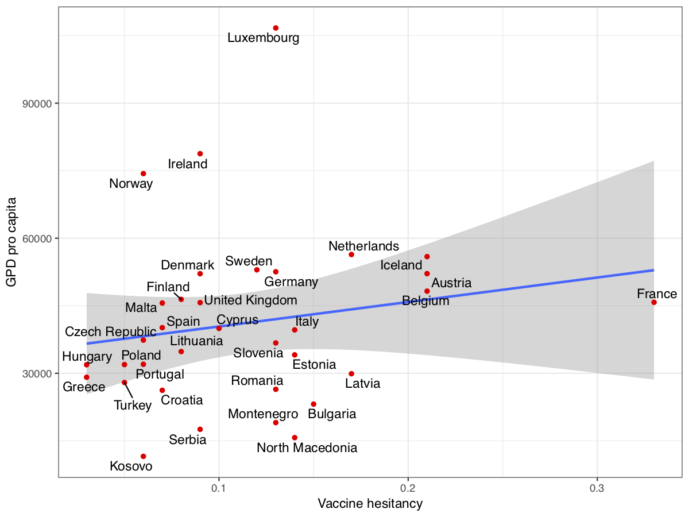

The Wellcome Trust has recently (yesterday) released the 2018 Global Monitor, a 140,000 people survey on how ‘people around the world think and feel about science and major health challenges’. Among the many interesting pieces of information, not surprisingly, attitudes towards vaccinations are starting to be widely discussed in the press.
The first important thing to notice, as the Wellcome Trust correctly does, is that ‘worldwide, 79% of people agree that vaccines are safe and 84% agree that they are effective’ and ‘92% of parents worldwide said that their children have received a vaccine to prevent them from getting childhood diseases .’ Whatever we may think, the majority of people around the world rightly believe that vaccines are good. Of course, there is a minority of people, especially in western countries, that is less convinced of that. Citing again the Wellcome Trust, ‘In France, one in three people disagree that vaccines are safe, the highest percentage for any country worldwide’. The France figure is, however, one of few outliers, also for western countries, where the averages of people disagreeing that vaccines are safe are around 10%.
Still, that one out of ten persons in western countries could think as such is worrying. Not surprisingly, social media has been identified as one of the culprits of this situation, and I bet that, following the Wellcome Trust survey, the trend will continue (I already found one article here). Out of curiosity, I correlated the Wellcome trust data with recent data on social media penetration/usage in Europe, and they are not correlated.
While I was on it, I also correlated the data with the importance of religion..
…the trust in science…
…and the GDP pro capita

Naturally, this is a very basic analysis. It could be for example that, within countries, people that are sceptical of vaccines use more social media than others. That anti-vaxx information spreads effectively in social media is not surprising. There are many reasons why anti-vaccination beliefs are easy to spread (and, conversely, it could be more difficult with pro-vaccination beliefs). Information around vaccines is psychologically attractive, involving potentially disgust and counterintuitive concepts that, coupled with a possible negative bias, make fearmongering on vaccines a good topic for online misinformation. All of this, however, is not a prerogative of digital social media (where correct, pro-vaccine, information also spreads effectively), and vaccine hesitancy is as old as vaccines themselves.
In any case, each time you hear someone saying, or writing, that anti-vaccination beliefs are linked to social media you should be sceptical. At least: it is not obvious.
If you are interested, all the technical stuff (data, R script, what I coded exactly as “vaccine hesitancy”, “social media penetration”, etc.) are in this GitHub repository.